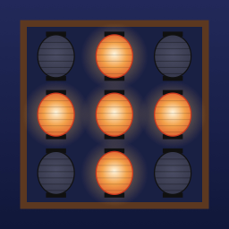

最少の手数が分かる提灯消し
押すと十字に明かりが入れかわる。最少で何手かが分かる、夜の縁日のパズル。
提灯を押すと、その提灯と上下左右の提灯の明かりが入れかわります。全部の明かりを消せばクリアです。
- 最少の手数。どの問題も、計算で「最少で何手で消せるか」を出し、「最少 8手／いま 2手」と見せます。最少で消すと金の印です
- ここから最少。回り道をしても、いまの盤から消すのに要る最少の手数が分かります
- ヒント。いまの盤から最少で消すときに押す提灯の1つを光らせます
- 3段の盤。消える・ほんのり・明るい の3段で、押すたびに1段ずつ変わる盤もあります
- 3×3〜6×6、2段と3段で100問ずつ（最少の手数の少ない順）
- 登録・課金はありません。音は出ません。画面のいちばん下に小さな広告が出ます（全画面広告・動画の広告は出しません）